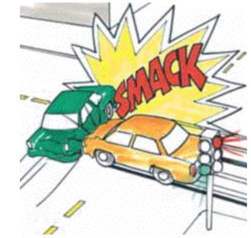

`
THE COLLISION THEORY
The Collision Theory
Collision theory explains why different reactions occur at different rates, and suggests ways to change the rate of a reaction.
Collision theory states that for a chemical reaction to occur, the reacting particles must collide with one another.
The rate of the reaction depends on the frequency of collisions. The theory also tells us that reacting particles often collide without reacting.
For collisions to be successful, reacting particles must :
(1) collide
(2) sufficient energy
(3) with the proper orientation.
Molecules must collide before they can react
This rule is fundamental to any analysis of an ordinary reaction mechanism.
It explains why termolecular processes are so uncommon. The kinetic theory of gases states that for every 1000 binary collisions, there will be only one event in which three molecules simultaneously come together.
Four-way collisions are so improbable that this process has never been demonstrated in an elementary reaction.

Consider a simple bimolecular step:
A + B → Products
If the two molecules A and B are to react, they must approach closely enough to disrupt some of their existing bonds and to permit the creation of any new ones that are needed in the products.
Such an encounter is called a COLLISION
.
The frequency of collisions between A and B in a gas is proportional to the concentration of each; if [A] is doubled, the frequency of A-B collisions will double, and doubling [B] will have the same effect.
If all collisions lead to products, then the rate of a bimolecular process is first-order in A and in B, or second-order overall:
rate=k[A][B](6.1.6.2)
Not all Collisions are Equal
For a gas at room temperature and normal atmospheric pressure, there are about 1033 collisions in each cubic centimeter of space every second. If every collision between two reactant molecules yielded products, all reactions would be complete in a fraction of a second. For example, when two billiard balls collide, they simply bounce off of each other. This is the most likely outcome if the reaction between A and B requires a significant disruption or rearrangement of the bonds between their atoms. In order to effectively initiate a reaction, collisions must be sufficiently energetic (or have sufficient kinetic energy) to bring about this bond disruption. This is further discussed below.